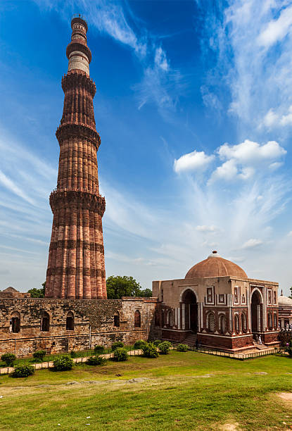

Taj Mahal

Red fort

Qutub Minar

Hawa Mahal

Goa
About goa beach
Shaped like the new moon, Goa's beaches are known the world over. Fringed by swaying palm and coconut trees with cool and comfortable shacks offering a variety of refreshments, Goa's 103 km coastline is blessed with the most enchanting beaches lapped by the Arabian Sea. his stretch begins from the headland of Fort Aguada just outside Panaji city and moves up north towards the border to Maharashtra. Right from the Fort Aguada Beach Resort, an interrupted stretch of sand lies awaiting tourists, sunbathers and party animals.Sinquerim, Candolim, Calangute, Baga, Anjuna, Vagator, Morjim and Arambol are the beaches that can be covered in the North Goa Circuit.